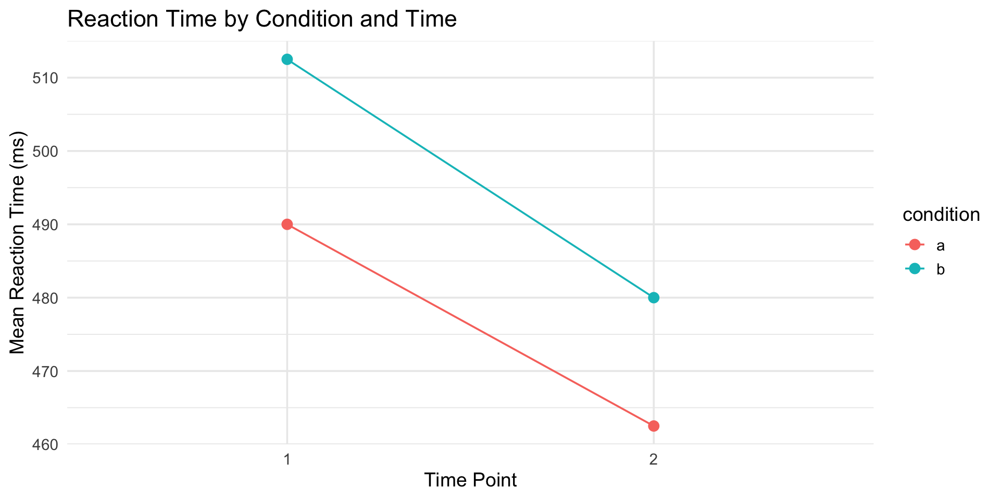

| participant | pre_test | post_test |
|---|---|---|
| P1 | 45 | 62 |
| P2 | 52 | 58 |
| P3 | 48 | 71 |
PSY 410: Data Science for Psychology
2026-04-13
“Tidy datasets are all alike, but every messy dataset is messy in its own way.” — Hadley Wickham
The tools we’ve learned (ggplot2, dplyr) expect data in a specific format: tidy data.
Simple in theory, surprisingly complex in practice.
| participant | pre_test | post_test |
|---|---|---|
| P1 | 45 | 62 |
| P2 | 52 | 58 |
| P3 | 48 | 71 |
No! Time (pre/post) is a variable, but it’s spread across columns.
| participant | time | score |
|---|---|---|
| P1 | pre | 45 |
| P1 | post | 62 |
| P2 | pre | 52 |
| P2 | post | 58 |
| P3 | pre | 48 |
| P3 | post | 71 |
Now: participant, time, and score are all columns.
Tidy data works with tidyverse tools:
Wide format
Long format
Most real data needs reshaping.
# A tibble: 3 × 4
student fall_2024 spring_2025 fall_2025
<chr> <dbl> <dbl> <dbl>
1 Alice 85 88 91
2 Bob 78 82 85
3 Carol 92 95 94The semester names are values, not variable names.
# A tibble: 3 × 2
id age_sex
<int> <chr>
1 1 25_M
2 2 32_F
3 3 28_F Age and sex are crammed into one column.
# A tibble: 4 × 5
id year month element value
<chr> <dbl> <dbl> <chr> <dbl>
1 MX001 2020 1 tmax 85
2 MX001 2020 2 tmax 87
3 MX002 2020 1 tmin 32
4 MX002 2020 2 tmin 35element contains variable names (tmax, tmin).
Surveys often look like:
# A tibble: 3 × 5
participant bdi_1 bdi_2 bdi_3 bdi_4
<int> <dbl> <dbl> <dbl> <dbl>
1 1 2 1 3 2
2 2 1 0 2 1
3 3 3 2 2 1Each item is a column — wide format.
pivot_longer() takes wide data and makes it long:
# A tibble: 9 × 3
student semester score
<chr> <chr> <dbl>
1 Alice fall_2024 85
2 Alice spring_2025 88
3 Alice fall_2025 91
4 Bob fall_2024 78
5 Bob spring_2025 82
6 Bob fall_2025 85
7 Carol fall_2024 92
8 Carol spring_2025 95
9 Carol fall_2025 94Use any of the select() helpers:
# A tibble: 12 × 3
participant item response
<int> <chr> <dbl>
1 1 bdi_1 2
2 1 bdi_2 1
3 1 bdi_3 3
4 1 bdi_4 2
5 2 bdi_1 1
6 2 bdi_2 0
7 2 bdi_3 2
8 2 bdi_4 1
9 3 bdi_1 3
10 3 bdi_2 2
11 3 bdi_3 2
12 3 bdi_4 1Now each response is its own row!
What if column names contain useful info?
# A tibble: 3 × 4
id score_t1 score_t2 score_t3
<int> <dbl> <dbl> <dbl>
1 1 100 105 108
2 2 95 100 102
3 3 110 115 120We want to extract the time point (t1, t2, t3).
# A tibble: 9 × 3
id time score
<int> <chr> <dbl>
1 1 t1 100
2 1 t2 105
3 1 t3 108
4 2 t1 95
5 2 t2 100
6 2 t3 102
7 3 t1 110
8 3 t2 115
9 3 t3 120For more complex parsing:
# Column names like "bdi_1", "anxiety_1", etc.
multi_scale <- tibble(
id = 1:2,
bdi_1 = c(2, 1), bdi_2 = c(1, 2),
anxiety_1 = c(3, 2), anxiety_2 = c(2, 3)
)
multi_scale |>
pivot_longer(
cols = -id,
names_to = c("scale", "item"),
names_pattern = "(.+)_(.+)", # Regex: anything_anything
values_to = "response"
)# A tibble: 8 × 4
id scale item response
<int> <chr> <chr> <dbl>
1 1 bdi 1 2
2 1 bdi 2 1
3 1 anxiety 1 3
4 1 anxiety 2 2
5 2 bdi 1 1
6 2 bdi 2 2
7 2 anxiety 1 2
8 2 anxiety 2 3We defined survey_wide earlier in this deck:
# A tibble: 3 × 5
participant bdi_1 bdi_2 bdi_3 bdi_4
<int> <dbl> <dbl> <dbl> <dbl>
1 1 2 1 3 2
2 2 1 0 2 1
3 3 3 2 2 1With a partner:
Tip
You’ll need pivot_longer() followed by group_by() + summarize(). The column names start with "bdi" — that’s a hint.
Sometimes you need to go from long to wide:
# A tibble: 2 × 5
id score_pre score_post rt_pre rt_post
<int> <dbl> <dbl> <dbl> <dbl>
1 1 45 62 500 480
2 2 52 58 520 490# Start with your data
experiment <- tibble(
id = 1:60,
condition = rep(c("control", "treatment"), 30),
score = c(rnorm(30, 50, 10), rnorm(30, 55, 10))
)
# Create summary
experiment |>
group_by(condition) |>
summarize(
M = round(mean(score), 2),
SD = round(sd(score), 2)
) |>
pivot_wider(
names_from = condition,
values_from = c(M, SD)
)# A tibble: 1 × 4
M_control M_treatment SD_control SD_treatment
<dbl> <dbl> <dbl> <dbl>
1 49.7 54.1 10.8 11.8Split one column into multiple:
For complex patterns:
The opposite — combine columns:
# A tibble: 4 × 5
subject cond_a_time1 cond_a_time2 cond_b_time1 cond_b_time2
<int> <dbl> <dbl> <dbl> <dbl>
1 1 450 420 480 440
2 2 520 490 540 510
3 3 480 460 500 470
4 4 510 480 530 500# A tibble: 16 × 4
subject condition time rt
<int> <chr> <chr> <dbl>
1 1 a 1 450
2 1 a 2 420
3 1 b 1 480
4 1 b 2 440
5 2 a 1 520
6 2 a 2 490
7 2 b 1 540
8 2 b 2 510
9 3 a 1 480
10 3 a 2 460
11 3 b 1 500
12 3 b 2 470
13 4 a 1 510
14 4 a 2 480
15 4 b 1 530
16 4 b 2 500tidy_rm |>
ggplot(aes(x = time, y = rt, color = condition, group = condition)) +
stat_summary(fun = mean, geom = "point", size = 3) +
stat_summary(fun = mean, geom = "line") +
stat_summary(fun.data = mean_se, geom = "errorbar", width = 0.1) +
labs(
title = "Reaction Time by Condition and Time",
x = "Time Point",
y = "Reaction Time (ms)"
) +
theme_minimal(base_size = 14)
# Raw questionnaire data
quest <- tibble(
pid = 1:3,
anx_1 = c(3, 2, 4), anx_2 = c(2, 3, 3), anx_3 = c(4, 2, 5),
dep_1 = c(2, 1, 3), dep_2 = c(3, 2, 4), dep_3 = c(2, 1, 3)
)
# Tidy and calculate subscales
quest |>
pivot_longer(
cols = -pid,
names_to = c("scale", "item"),
names_pattern = "(.+)_(.+)",
values_to = "response"
) |>
group_by(pid, scale) |>
summarize(subscale_mean = mean(response), .groups = "drop") |>
pivot_wider(names_from = scale, values_from = subscale_mean)# A tibble: 3 × 3
pid anx dep
<int> <dbl> <dbl>
1 1 3 2.33
2 2 2.33 1.33
3 3 4 3.33# A tibble: 12 × 4
classroom student time score
<chr> <int> <chr> <dbl>
1 A 1 pretest 70
2 A 1 posttest 80
3 A 2 pretest 75
4 A 2 posttest 82
5 A 3 pretest 72
6 A 3 posttest 78
7 B 4 pretest 68
8 B 4 posttest 75
9 B 5 pretest 71
10 B 5 posttest 79
11 B 6 pretest 69
12 B 6 posttest 77Ask yourself: What are my variables?
Not everything needs to be long:
Age, gender, and score are different variables — keep them as columns.
Make sure your pivot preserves all data:
# A tibble: 3 × 4
student fall_2024 spring_2025 fall_2025
<chr> <dbl> <dbl> <dbl>
1 Alice 85 88 91
2 Bob 78 82 85
3 Carol 92 95 94# A tibble: 9 × 3
student semester score
<chr> <chr> <dbl>
1 Alice fall_2024 85
2 Alice spring_2025 88
3 Alice fall_2025 91
4 Bob fall_2024 78
5 Bob spring_2025 82
6 Bob fall_2025 85
7 Carol fall_2024 92
8 Carol spring_2025 95
9 Carol fall_2025 94Check: nrow(original) × ncol(pivoted_columns) = nrow(result)
We created wide_rm earlier — a repeated measures dataset:
# A tibble: 4 × 5
subject cond_a_time1 cond_a_time2 cond_b_time1 cond_b_time2
<int> <dbl> <dbl> <dbl> <dbl>
1 1 450 420 480 440
2 2 520 490 540 510
3 3 480 460 500 470
4 4 510 480 530 500On your own:
This is very close to what Assignment 3 will ask you to do.
| Function | What it does |
|---|---|
pivot_longer() |
Wide → Long |
pivot_wider() |
Long → Wide |
separate_*() |
Split columns |
unite() |
Combine columns |
When in doubt, ask: “What would make this easiest to plot/analyze?”
📖 Read:
✅ Practice:
pivot_longer() — it’s the most commonnames_patternNext time: Data Import
We’ll learn to read CSV files, Excel spreadsheets, and more!
PSY 410 | Session 5